In [160]:
import numpy as np
import glob,os
%pylab inline --no-import-all
plt.rc('font', family='serif', serif='Times',size=15)
plt.rc('text', usetex=True)
plt.rc('xtick', labelsize=20)
plt.rc('xtick.major', size=10)
plt.rc('ytick.major', size=10)
plt.rc('ytick', labelsize=20)
plt.rc('axes', labelsize=20)
plt.rc('figure',titlesize=25)
plt.rcParams['image.origin'] = 'lower'
plt.rcParams['image.interpolation'] = 'nearest'
plt.rcParams['axes.linewidth'] = 2.
from astropy.io import fits
import logging as log
from crispy.tools.initLogger import getLogger
log = getLogger('main')
from crispy.tools.image import Image
os.chdir('/Users/mrizzo/IFS/crispy/crispy/WFIRST/')
from params import Params
par = Params()
par.hdr
Populating the interactive namespace from numpy and matplotlib
Out[160]:
SIMPLE = T / conforms to FITS standard
BITPIX = 8 / array data type
NAXIS = 0 / number of array dimensions
EXTEND = T
COMMENT
COMMENT ************************************************************
COMMENT ********************** General parameters ******************
COMMENT ************************************************************
COMMENT
NLENS = 108 / # lenslets across array
PITCH = 0.000174 / Lenslet pitch (meters)
INTERLAC= 2.0 / Interlacing
PHILENS = 26.56505117707799 / Rotation angle of the lenslets (deg)
PIXSIZE = 1.3E-05 / Pixel size (meters)
LENSAMP = 0.5 / Lenslet sampling (lam/D)
LSAMPWAV= 660.0 / Lenslet sampling wavelength (nm)
FWHM = 2.0 / FHWM of PSFLet at detector (pixels)
FWHMLAM = 660.0 / Wavelength at which FWHM is defined (nm)
NPIX = 1024 / Number of detector pixels
BW = 0.18 / Bandwidth
PIXPRLAM= 2.0 / Pixels per resolution element
R = 50 / Spectral resolution
In [3]:
lensX=10
lensY=10
from crispy.tools.locate_psflets import PSFLets
from crispy.tools.reduction import get_cutout
polychromeR = fits.open(par.wavecalDir + 'polychromeR%d.fits' % (par.R))
psflets = polychromeR[0].data
psftool = PSFLets()
lamlist = np.loadtxt(par.wavecalDir + "lamsol.dat")[:, 0]
allcoef = np.loadtxt(par.wavecalDir + "lamsol.dat")[:, 1:]
# lam in nm
psftool.geninterparray(lamlist, allcoef)
xlist = []
ylist = []
for lam in lamlist:
_x,_y = psftool.return_locations(lam, allcoef, lensX, lensY)
xlist += [_x]
ylist += [_y]
im = Image(filename = par.wavecalDir + 'polychromeR%dstack.fits' % (par.R))
subim, psflet_subarr, [x0, x1, y0, y1] = get_cutout(im,xlist,ylist,psflets)
crispy - INFO - Read data from HDU 0 of ..//ReferenceFiles/wavecalR50_660/polychromeR50stack.fits
In [4]:
plt.imshow(subim)
plt.colorbar(orientation='horizontal')
Out[4]:
<matplotlib.colorbar.Colorbar at 0x1c1e69f450>
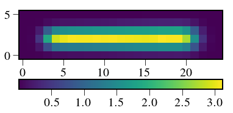
In [5]:
print np.sum(subim)
119.967
In [6]:
plt.imshow(psflet_subarr[0])
for i in range(psflet_subarr.shape[0]):
psflet_subarr[i] /= np.sum(psflet_subarr[i])

In [7]:
print 1./np.sum(psflet_subarr[0]**2)
9.63189459363
In [8]:
subim = np.sum(psflet_subarr,axis=0)
plt.imshow(subim)
plt.colorbar(orientation='horizontal')
print np.sum(subim)
10.0
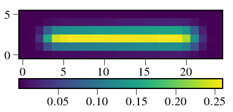
In [281]:
Out[281]:
0.19446558720480406
In [176]:
Nelec = 1000
poisson = np.random.poisson(subim*Nelec)
In [183]:
plt.imshow(poisson)
plt.colorbar(orientation='horizontal')
plt.imshow(subim*Nelec)
Out[183]:
<matplotlib.image.AxesImage at 0x1c251633d0>
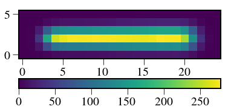
In [177]:
from crispy.IFS import reduceIFSMap
subim_flat = np.reshape(poisson, -1)
psflets_flat = np.reshape(psflet_subarr, (psflet_subarr.shape[0], -1))
coef = np.linalg.lstsq(psflets_flat.T, subim_flat)[0]
plt.plot(coef)
Out[177]:
[<matplotlib.lines.Line2D at 0x1c24186510>]
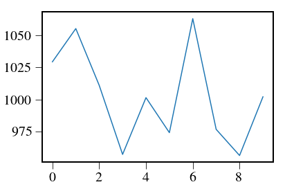
In [163]:
sumpsflets = np.reshape(subim*Nelec,-1)
x = subim_flat
A = psflets_flat.T
right = np.dot(np.transpose(A),x)
Cinv = np.dot(np.transpose(A),A)
C = np.linalg.inv(Cinv)
coefs2 = np.dot(left,right)
print coefs2
print coef
import pandas as pd
df = pd.DataFrame(data=Cinv)
df
[ 1029.07494861 879.24787784 1033.37495909 1000.32638945 1011.97641341
1087.82293205 897.36978627 1060.88131053 1016.17029911 975.87481607]
[ 1029.07494861 879.24787784 1033.37495909 1000.32638945 1011.97641341
1087.82293205 897.36978627 1060.88131053 1016.17029911 975.87481607]
Out[163]:
| 0 | 1 | 2 | 3 | 4 | 5 | 6 | 7 | 8 | 9 | |
|---|---|---|---|---|---|---|---|---|---|---|
| 0 | 1.038217e-01 | 3.781686e-02 | 1.840839e-03 | 1.013038e-05 | 8.652204e-09 | 4.499302e-08 | 2.484550e-07 | 2.281947e-07 | 8.982292e-08 | 2.520272e-07 |
| 1 | 3.781686e-02 | 1.018298e-01 | 3.907701e-02 | 2.134296e-03 | 1.585353e-05 | 2.551539e-08 | 6.033666e-08 | 2.579995e-07 | 3.781318e-07 | 1.250960e-07 |
| 2 | 1.840839e-03 | 3.907701e-02 | 9.909606e-02 | 4.004341e-02 | 2.592649e-03 | 2.970352e-05 | 5.567989e-08 | 4.694419e-08 | 3.752633e-07 | 5.447811e-07 |
| 3 | 1.013038e-05 | 2.134296e-03 | 4.004341e-02 | 9.722045e-02 | 4.058052e-02 | 3.158885e-03 | 4.540734e-05 | 1.168523e-07 | 5.635559e-08 | 4.599480e-07 |
| 4 | 8.652204e-09 | 1.585353e-05 | 2.592649e-03 | 4.058052e-02 | 9.465773e-02 | 4.112732e-02 | 3.674209e-03 | 6.368950e-05 | 2.097110e-07 | 7.582652e-08 |
| 5 | 4.499302e-08 | 2.551539e-08 | 2.970352e-05 | 3.158885e-03 | 4.112732e-02 | 9.028060e-02 | 4.157850e-02 | 4.249863e-03 | 9.927493e-05 | 4.333803e-07 |
| 6 | 2.484550e-07 | 6.033666e-08 | 5.567989e-08 | 4.540734e-05 | 3.674209e-03 | 4.157850e-02 | 8.755923e-02 | 4.206276e-02 | 4.888705e-03 | 1.282256e-04 |
| 7 | 2.281947e-07 | 2.579995e-07 | 4.694419e-08 | 1.168523e-07 | 6.368950e-05 | 4.249863e-03 | 4.206276e-02 | 8.837557e-02 | 4.320411e-02 | 5.265365e-03 |
| 8 | 8.982292e-08 | 3.781318e-07 | 3.752633e-07 | 5.635559e-08 | 2.097110e-07 | 9.927493e-05 | 4.888705e-03 | 4.320411e-02 | 8.554713e-02 | 4.410052e-02 |
| 9 | 2.520272e-07 | 1.250960e-07 | 5.447811e-07 | 4.599480e-07 | 7.582652e-08 | 4.333803e-07 | 1.282256e-04 | 5.265365e-03 | 4.410052e-02 | 8.414933e-02 |
In [187]:
print np.reshape(subim*Nelec,-1)
print subim_flat
[ 8.36914584e-03 9.71942144e-02 1.24568967e+00 4.85315231e+00
7.82761818e+00 8.78953079e+00 9.22344047e+00 9.75942182e+00
1.03366595e+01 1.09537093e+01 1.17170004e+01 1.25887064e+01
1.35931775e+01 1.47113787e+01 1.58049908e+01 1.67012367e+01
1.71757125e+01 1.75870260e+01 1.80836216e+01 1.85913175e+01
1.70223436e+01 1.03571405e+01 3.03675836e+00 3.48716876e-01
1.56939391e-02 1.85383312e-02 1.11728846e+00 1.57654281e+01
6.18381017e+01 9.67073310e+01 1.03351188e+02 1.06288370e+02
1.07457127e+02 1.09200287e+02 1.11509701e+02 1.12948176e+02
1.15380036e+02 1.17349923e+02 1.19332164e+02 1.21273726e+02
1.22778742e+02 1.24271421e+02 1.27199067e+02 1.27159103e+02
1.28022613e+02 1.13592655e+02 6.62721778e+01 1.90021625e+01
2.15541932e+00 8.66642450e-02 4.64581259e-02 2.80660223e+00
3.96828873e+01 1.55726811e+02 2.41016863e+02 2.52896074e+02
2.57951116e+02 2.56449351e+02 2.56735322e+02 2.58729268e+02
2.56679073e+02 2.57360271e+02 2.56251479e+02 2.54782997e+02
2.53658246e+02 2.52691000e+02 2.54299501e+02 2.60492449e+02
2.58084156e+02 2.58016757e+02 2.26195329e+02 1.29759063e+02
3.68714503e+01 4.16854321e+00 1.67366384e-01 2.31166027e-02
1.39235408e+00 1.96534506e+01 7.70765064e+01 1.20177152e+02
1.27791925e+02 1.31090294e+02 1.31936102e+02 1.33538225e+02
1.35880432e+02 1.36918932e+02 1.39216256e+02 1.40850905e+02
1.42445327e+02 1.44042730e+02 1.45258200e+02 1.46798609e+02
1.50246884e+02 1.49844881e+02 1.50575046e+02 1.33206324e+02
7.74069884e+01 2.21479016e+01 2.51025731e+00 1.00901499e-01
1.26798784e-02 1.48274888e-01 1.92868671e+00 7.52069585e+00
1.20475846e+01 1.33942136e+01 1.39881314e+01 1.46675411e+01
1.54106697e+01 1.62209964e+01 1.71949955e+01 1.83111671e+01
1.95598765e+01 2.09364968e+01 2.22758844e+01 2.33642621e+01
2.39534043e+01 2.45078783e+01 2.50601602e+01 2.56561868e+01
2.33614783e+01 1.41168813e+01 4.12448682e+00 4.73325113e-01
2.24295888e-02 7.98698388e-01 8.57091568e-01 8.61673468e-01
6.88491663e-01 4.16676063e-01 3.15906599e-01 3.17086259e-01
3.55162534e-01 3.98322692e-01 4.46126746e-01 5.13177764e-01
5.90911397e-01 6.95041729e-01 8.21066062e-01 9.68871841e-01
1.14002721e+00 1.25149034e+00 1.31435432e+00 1.41546319e+00
1.51564530e+00 1.47881251e+00 1.05919094e+00 5.47445435e-01
3.87928909e-01 4.31800794e-01]
[ 0 0 0 5 13 13 9 10 12 7 8 13 13 13 18 16 18 26
17 20 22 10 2 2 0 0 0 16 64 90 122 112 93 102 115 93
111 111 122 128 122 117 125 116 148 123 59 26 0 0 0 1 42 151
266 239 279 247 270 242 254 259 252 247 257 260 257 251 244 247 213 140
40 0 1 0 1 16 90 115 149 148 145 139 145 132 140 145 137 155
151 154 164 147 148 131 69 19 5 0 0 0 2 6 6 9 14 17
18 9 17 11 20 22 30 25 20 26 23 23 15 22 6 0 0 0
2 1 1 1 0 1 0 0 0 0 1 0 1 0 0 1 2 1
1 5 2 0 1 1]
In [194]:
sumpsflets = np.reshape(subim*Nelec,-1)
x = subim_flat
A = psflets_flat.T
Ninv = np.linalg.inv(np.diag(sumpsflets))
right = np.dot(np.transpose(A),np.dot(Ninv,x))
Cinv = np.dot(np.transpose(A),np.dot(Ninv,A))
C = np.linalg.inv(Cinv)
coefs2 = np.dot(C,right)
print coefs2
print coef
plt.plot(coefs2)
plt.plot(coef)
import pandas as pd
df = pd.DataFrame(data=Cinv)
df
[ 1009.69949343 1082.5808662 1004.90373994 947.97632249 977.80226055
1004.96213425 1045.63562269 996.39692379 957.57649455 1021.46614213]
[ 1029.41823826 1055.36635742 1011.03572279 957.09061157 1001.41691338
974.09039007 1063.13357213 976.65161888 956.23135385 1002.07668355]
Out[194]:
| 0 | 1 | 2 | 3 | 4 | 5 | 6 | 7 | 8 | 9 | |
|---|---|---|---|---|---|---|---|---|---|---|
| 0 | 7.734472e-04 | 2.157569e-04 | 1.015925e-05 | 5.566459e-08 | 2.388645e-09 | 3.760930e-08 | 1.326292e-07 | 1.090138e-07 | 5.624654e-08 | 2.430884e-07 |
| 1 | 2.157569e-04 | 5.585638e-04 | 2.135959e-04 | 1.162064e-05 | 8.647409e-08 | 1.094544e-09 | 2.859788e-08 | 1.174503e-07 | 1.509469e-07 | 7.810491e-08 |
| 2 | 1.015925e-05 | 2.135959e-04 | 5.433293e-04 | 2.181984e-04 | 1.415082e-05 | 1.644270e-07 | 1.144279e-09 | 2.049863e-08 | 1.491961e-07 | 2.309696e-07 |
| 3 | 5.566459e-08 | 1.162064e-05 | 2.181984e-04 | 5.302746e-04 | 2.218581e-04 | 1.743905e-05 | 2.507104e-07 | 1.135271e-09 | 2.505959e-08 | 2.765784e-07 |
| 4 | 2.388645e-09 | 8.647409e-08 | 1.415082e-05 | 2.218581e-04 | 5.168332e-04 | 2.264001e-04 | 2.023953e-05 | 3.500155e-07 | 2.217204e-09 | 7.705220e-08 |
| 5 | 3.760930e-08 | 1.094544e-09 | 1.644270e-07 | 1.743905e-05 | 2.264001e-04 | 5.006253e-04 | 2.311844e-04 | 2.358952e-05 | 5.499433e-07 | 8.529147e-09 |
| 6 | 1.326292e-07 | 2.859788e-08 | 1.144279e-09 | 2.507104e-07 | 2.023953e-05 | 2.311844e-04 | 4.880761e-04 | 2.324718e-04 | 2.691534e-05 | 6.998262e-07 |
| 7 | 1.090138e-07 | 1.174503e-07 | 2.049863e-08 | 1.135271e-09 | 3.500155e-07 | 2.358952e-05 | 2.324718e-04 | 4.795250e-04 | 2.350915e-04 | 2.872404e-05 |
| 8 | 5.624654e-08 | 1.509469e-07 | 1.491961e-07 | 2.505959e-08 | 2.217204e-09 | 5.499433e-07 | 2.691534e-05 | 2.350915e-04 | 4.743217e-04 | 2.627378e-04 |
| 9 | 2.430884e-07 | 7.810491e-08 | 2.309696e-07 | 2.765784e-07 | 7.705220e-08 | 8.529147e-09 | 6.998262e-07 | 2.872404e-05 | 2.627378e-04 | 7.069240e-04 |

In [195]:
import scipy as sp
Q = sp.linalg.sqrtm(Cinv)
df = pd.DataFrame(data=Q)
df
Out[195]:
| 0 | 1 | 2 | 3 | 4 | 5 | 6 | 7 | 8 | 9 | |
|---|---|---|---|---|---|---|---|---|---|---|
| 0 | 2.747264e-02 | 4.318693e-03 | -2.179829e-04 | 0.000050 | -0.000013 | 0.000005 | 0.000001 | 2.277440e-06 | 1.163512e-08 | 4.542546e-06 |
| 1 | 4.318693e-03 | 2.273227e-02 | 4.802638e-03 | -0.000293 | 0.000072 | -0.000020 | 0.000007 | -1.299198e-07 | 3.622440e-06 | 3.294230e-07 |
| 2 | -2.179829e-04 | 4.802638e-03 | 2.224853e-02 | 0.005013 | -0.000289 | 0.000076 | -0.000023 | 7.413944e-06 | 2.079646e-07 | 4.499250e-06 |
| 3 | 5.032201e-05 | -2.926043e-04 | 5.012935e-03 | 0.021864 | 0.005189 | -0.000267 | 0.000080 | -2.426958e-05 | 7.348341e-06 | 3.478876e-06 |
| 4 | -1.339374e-05 | 7.154025e-05 | -2.888467e-04 | 0.005189 | 0.021460 | 0.005405 | -0.000264 | 8.161484e-05 | -2.441367e-05 | 6.603404e-06 |
| 5 | 4.591565e-06 | -2.032603e-05 | 7.625768e-05 | -0.000267 | 0.005405 | 0.020965 | 0.005634 | -2.346800e-04 | 7.725068e-05 | -1.681522e-05 |
| 6 | 1.077780e-06 | 6.741974e-06 | -2.287725e-05 | 0.000080 | -0.000264 | 0.005634 | 0.020572 | 5.746442e-03 | -1.822801e-04 | 5.266418e-05 |
| 7 | 2.277440e-06 | -1.299198e-07 | 7.413944e-06 | -0.000024 | 0.000082 | -0.000235 | 0.005746 | 2.030361e-02 | 5.847476e-03 | -1.069790e-04 |
| 8 | 1.163512e-08 | 3.622440e-06 | 2.079646e-07 | 0.000007 | -0.000024 | 0.000077 | -0.000182 | 5.847476e-03 | 2.018732e-02 | 5.706236e-03 |
| 9 | 4.542546e-06 | 3.294230e-07 | 4.499250e-06 | 0.000003 | 0.000007 | -0.000017 | 0.000053 | -1.069790e-04 | 5.706236e-03 | 2.596822e-02 |
In [274]:
np.sum(Q[0])
Out[274]:
0.031622776601683916
In [276]:
s = np.sum(Q,axis=1)
print s
R = Q/s[np.newaxis,:]
Ctilde_inv = np.diag(s**2)
Ctilde = np.dot(np.dot(R,C),R.T)
# eigvec,R = np.linalg.eig(Cinv)
# print eigvec
# Ctildeinv = np.diag(eigvec)
# Cinv_check = np.dot(R,np.dot(Ctildeinv,R.T))
# Ctilde = np.linalg.inv(Ctildeinv)
# pd.DataFrame(data=Cinv_check)
print np.sum(np.dot(R.T,R)[1])
print np.linalg.norm(coefs2)
print np.linalg.norm(np.dot(R.T,coefs2))
pd.DataFrame(data=R)
[ 0.03162278 0.03162278 0.03162278 0.03162278 0.03162278 0.03162278
0.03162278 0.03162278 0.03162278 0.03162278]
1.0
3180.01850514
3178.99792594
Out[276]:
| 0 | 1 | 2 | 3 | 4 | 5 | 6 | 7 | 8 | 9 | |
|---|---|---|---|---|---|---|---|---|---|---|
| 0 | 8.687611e-01 | 0.136569 | -0.006893 | 0.001591 | -0.000424 | 0.000145 | 0.000034 | 0.000072 | 3.679347e-07 | 0.000144 |
| 1 | 1.365691e-01 | 0.718858 | 0.151873 | -0.009253 | 0.002262 | -0.000643 | 0.000213 | -0.000004 | 1.145516e-04 | 0.000010 |
| 2 | -6.893223e-03 | 0.151873 | 0.703560 | 0.158523 | -0.009134 | 0.002411 | -0.000723 | 0.000234 | 6.576418e-06 | 0.000142 |
| 3 | 1.591322e-03 | -0.009253 | 0.158523 | 0.691416 | 0.164080 | -0.008455 | 0.002523 | -0.000767 | 2.323749e-04 | 0.000110 |
| 4 | -4.235471e-04 | 0.002262 | -0.009134 | 0.164080 | 0.678622 | 0.170932 | -0.008356 | 0.002581 | -7.720279e-04 | 0.000209 |
| 5 | 1.451980e-04 | -0.000643 | 0.002411 | -0.008455 | 0.170932 | 0.662972 | 0.178148 | -0.007421 | 2.442881e-03 | -0.000532 |
| 6 | 3.408239e-05 | 0.000213 | -0.000723 | 0.002523 | -0.008356 | 0.178148 | 0.650542 | 0.181718 | -5.764203e-03 | 0.001665 |
| 7 | 7.201898e-05 | -0.000004 | 0.000234 | -0.000767 | 0.002581 | -0.007421 | 0.181718 | 0.642057 | 1.849134e-01 | -0.003383 |
| 8 | 3.679347e-07 | 0.000115 | 0.000007 | 0.000232 | -0.000772 | 0.002443 | -0.005764 | 0.184913 | 6.383790e-01 | 0.180447 |
| 9 | 1.436479e-04 | 0.000010 | 0.000142 | 0.000110 | 0.000209 | -0.000532 | 0.001665 | -0.003383 | 1.804470e-01 | 0.821187 |
In [197]:
pd.DataFrame(data=Cinv)
Out[197]:
| 0 | 1 | 2 | 3 | 4 | 5 | 6 | 7 | 8 | 9 | |
|---|---|---|---|---|---|---|---|---|---|---|
| 0 | 7.734472e-04 | 2.157569e-04 | 1.015925e-05 | 5.566459e-08 | 2.388645e-09 | 3.760930e-08 | 1.326292e-07 | 1.090138e-07 | 5.624654e-08 | 2.430884e-07 |
| 1 | 2.157569e-04 | 5.585638e-04 | 2.135959e-04 | 1.162064e-05 | 8.647409e-08 | 1.094544e-09 | 2.859788e-08 | 1.174503e-07 | 1.509469e-07 | 7.810491e-08 |
| 2 | 1.015925e-05 | 2.135959e-04 | 5.433293e-04 | 2.181984e-04 | 1.415082e-05 | 1.644270e-07 | 1.144279e-09 | 2.049863e-08 | 1.491961e-07 | 2.309696e-07 |
| 3 | 5.566459e-08 | 1.162064e-05 | 2.181984e-04 | 5.302746e-04 | 2.218581e-04 | 1.743905e-05 | 2.507104e-07 | 1.135271e-09 | 2.505959e-08 | 2.765784e-07 |
| 4 | 2.388645e-09 | 8.647409e-08 | 1.415082e-05 | 2.218581e-04 | 5.168332e-04 | 2.264001e-04 | 2.023953e-05 | 3.500155e-07 | 2.217204e-09 | 7.705220e-08 |
| 5 | 3.760930e-08 | 1.094544e-09 | 1.644270e-07 | 1.743905e-05 | 2.264001e-04 | 5.006253e-04 | 2.311844e-04 | 2.358952e-05 | 5.499433e-07 | 8.529147e-09 |
| 6 | 1.326292e-07 | 2.859788e-08 | 1.144279e-09 | 2.507104e-07 | 2.023953e-05 | 2.311844e-04 | 4.880761e-04 | 2.324718e-04 | 2.691534e-05 | 6.998262e-07 |
| 7 | 1.090138e-07 | 1.174503e-07 | 2.049863e-08 | 1.135271e-09 | 3.500155e-07 | 2.358952e-05 | 2.324718e-04 | 4.795250e-04 | 2.350915e-04 | 2.872404e-05 |
| 8 | 5.624654e-08 | 1.509469e-07 | 1.491961e-07 | 2.505959e-08 | 2.217204e-09 | 5.499433e-07 | 2.691534e-05 | 2.350915e-04 | 4.743217e-04 | 2.627378e-04 |
| 9 | 2.430884e-07 | 7.810491e-08 | 2.309696e-07 | 2.765784e-07 | 7.705220e-08 | 8.529147e-09 | 6.998262e-07 | 2.872404e-05 | 2.627378e-04 | 7.069240e-04 |
In [198]:
pd.DataFrame(data=Ctilde)
Out[198]:
| 0 | 1 | 2 | 3 | 4 | 5 | 6 | 7 | 8 | 9 | |
|---|---|---|---|---|---|---|---|---|---|---|
| 0 | 1.000000e+03 | 1.084007e-12 | 1.566886e-12 | 1.973644e-12 | 4.704766e-13 | 4.424441e-13 | 2.410884e-13 | 2.062135e-13 | -4.402034e-13 | 4.405920e-13 |
| 1 | 1.193874e-12 | 1.000000e+03 | 4.465956e-13 | -4.328951e-13 | 1.238365e-12 | 3.927543e-13 | -2.459259e-13 | 9.425893e-13 | 1.362799e-12 | 5.048739e-13 |
| 2 | 1.614585e-12 | 3.954041e-13 | 1.000000e+03 | -3.943976e-14 | 7.756921e-15 | -3.256844e-13 | 8.850875e-13 | -8.340411e-14 | 3.250733e-13 | 5.933032e-13 |
| 3 | 1.980524e-12 | -4.376654e-13 | -9.869702e-14 | 1.000000e+03 | -5.522832e-13 | 7.454553e-13 | 7.034309e-13 | 5.352422e-13 | 2.042810e-14 | 4.836131e-13 |
| 4 | 4.743130e-13 | 1.237227e-12 | -1.214769e-13 | -6.334758e-13 | 1.000000e+03 | 1.993751e-12 | -4.876598e-13 | 2.353952e-12 | 1.215028e-12 | 1.912248e-12 |
| 5 | 4.438471e-13 | 4.027736e-13 | -2.712018e-13 | 7.028230e-13 | 1.971726e-12 | 1.000000e+03 | -1.748890e-14 | 7.322187e-13 | 2.842171e-13 | -9.237056e-14 |
| 6 | 2.416984e-13 | -2.363970e-13 | 8.816225e-13 | 6.891675e-13 | -4.950891e-13 | -1.384378e-13 | 1.000000e+03 | -4.588506e-13 | -3.126388e-13 | -6.181722e-13 |
| 7 | 2.053900e-13 | 9.448034e-13 | -8.125549e-14 | 5.560882e-13 | 2.358866e-12 | 8.205061e-13 | -3.870634e-13 | 1.000000e+03 | 3.410605e-13 | -4.263256e-13 |
| 8 | -4.401859e-13 | 1.362754e-12 | 3.309383e-13 | 2.070794e-14 | 1.254560e-12 | 2.071758e-13 | -3.130328e-13 | 3.154448e-13 | 1.000000e+03 | 4.547474e-13 |
| 9 | 4.407484e-13 | 5.047325e-13 | 5.944053e-13 | 4.857925e-13 | 1.920158e-12 | -9.832259e-14 | -5.997332e-13 | -5.061070e-13 | 3.410605e-13 | 1.000000e+03 |
In [199]:
pd.DataFrame(data=R)
Out[199]:
| 0 | 1 | 2 | 3 | 4 | 5 | 6 | 7 | 8 | 9 | |
|---|---|---|---|---|---|---|---|---|---|---|
| 0 | 8.687611e-01 | 0.136569 | -0.006893 | 0.001591 | -0.000424 | 0.000145 | 0.000034 | 0.000072 | 3.679347e-07 | 0.000144 |
| 1 | 1.365691e-01 | 0.718858 | 0.151873 | -0.009253 | 0.002262 | -0.000643 | 0.000213 | -0.000004 | 1.145516e-04 | 0.000010 |
| 2 | -6.893223e-03 | 0.151873 | 0.703560 | 0.158523 | -0.009134 | 0.002411 | -0.000723 | 0.000234 | 6.576418e-06 | 0.000142 |
| 3 | 1.591322e-03 | -0.009253 | 0.158523 | 0.691416 | 0.164080 | -0.008455 | 0.002523 | -0.000767 | 2.323749e-04 | 0.000110 |
| 4 | -4.235471e-04 | 0.002262 | -0.009134 | 0.164080 | 0.678622 | 0.170932 | -0.008356 | 0.002581 | -7.720279e-04 | 0.000209 |
| 5 | 1.451980e-04 | -0.000643 | 0.002411 | -0.008455 | 0.170932 | 0.662972 | 0.178148 | -0.007421 | 2.442881e-03 | -0.000532 |
| 6 | 3.408239e-05 | 0.000213 | -0.000723 | 0.002523 | -0.008356 | 0.178148 | 0.650542 | 0.181718 | -5.764203e-03 | 0.001665 |
| 7 | 7.201898e-05 | -0.000004 | 0.000234 | -0.000767 | 0.002581 | -0.007421 | 0.181718 | 0.642057 | 1.849134e-01 | -0.003383 |
| 8 | 3.679347e-07 | 0.000115 | 0.000007 | 0.000232 | -0.000772 | 0.002443 | -0.005764 | 0.184913 | 6.383790e-01 | 0.180447 |
| 9 | 1.436479e-04 | 0.000010 | 0.000142 | 0.000110 | 0.000209 | -0.000532 | 0.001665 | -0.003383 | 1.804470e-01 | 0.821187 |
In [200]:
ftilde = np.dot(R.T,coefs2)
In [201]:
plt.plot(ftilde)
plt.plot(coefs2)
Out[201]:
[<matplotlib.lines.Line2D at 0x1c256f3850>]

In [202]:
res = poisson-np.reshape(np.dot(A,ftilde),subim.shape)
plt.imshow(res)
plt.colorbar(orientation='horizontal')
print np.sum(res**2)
6158.30269334

In [205]:
res = poisson-np.reshape(np.dot(A,coef),subim.shape)
plt.imshow(res)
plt.colorbar(orientation='horizontal')
print np.sum(res**2)
5983.40627738
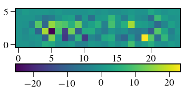
In [79]:
pd.DataFrame(data=Ctilde)
Out[79]:
| 0 | 1 | 2 | 3 | 4 | 5 | 6 | 7 | 8 | 9 | |
|---|---|---|---|---|---|---|---|---|---|---|
| 0 | 1.000000e+03 | 1.047164e-12 | 1.542670e-12 | 1.991906e-12 | 4.865038e-13 | 4.442494e-13 | 2.420484e-13 | 2.050090e-13 | -4.404810e-13 | 4.401479e-13 |
| 1 | 1.183358e-12 | 1.000000e+03 | 3.873132e-13 | -4.613495e-13 | 1.164422e-12 | 3.901602e-13 | -2.500752e-13 | 9.494771e-13 | 1.362466e-12 | 5.052070e-13 |
| 2 | 1.591648e-12 | 3.043960e-13 | 1.000000e+03 | 6.667713e-14 | 2.702058e-13 | -3.383922e-13 | 8.948923e-13 | -9.800312e-14 | 3.308465e-13 | 5.939693e-13 |
| 3 | 1.999778e-12 | -4.935485e-13 | -5.824559e-14 | 1.000000e+03 | -6.077263e-13 | 4.119348e-13 | 7.892916e-13 | 5.280457e-13 | 3.641532e-14 | 4.818368e-13 |
| 4 | 4.862728e-13 | 1.164545e-12 | 1.641657e-13 | -7.136695e-13 | 1.000000e+03 | 1.764369e-12 | -3.280897e-13 | 2.212372e-12 | 1.261213e-12 | 1.908695e-12 |
| 5 | 4.475986e-13 | 4.012577e-13 | -2.678575e-13 | 3.837688e-13 | 1.915488e-12 | 1.000000e+03 | 1.867192e-13 | 9.082254e-13 | 3.268497e-13 | -1.154632e-13 |
| 6 | 2.419082e-13 | -2.423133e-13 | 8.931239e-13 | 7.634229e-13 | -2.714065e-13 | 7.857264e-14 | 1.000000e+03 | -4.708012e-13 | -4.831691e-13 | -5.329071e-13 |
| 7 | 2.044334e-13 | 9.502762e-13 | -9.851634e-14 | 5.561742e-13 | 2.221975e-12 | 9.333929e-13 | -3.687920e-13 | 1.000000e+03 | 2.842171e-13 | -4.973799e-13 |
| 8 | -4.399681e-13 | 1.360916e-12 | 3.353250e-13 | 3.126327e-14 | 1.292535e-12 | 2.305231e-13 | -4.308748e-13 | 3.055963e-13 | 1.000000e+03 | 5.115908e-13 |
| 9 | 4.407388e-13 | 5.050290e-13 | 5.937839e-13 | 4.820915e-13 | 1.916001e-12 | -1.087304e-13 | -5.294150e-13 | -5.481175e-13 | 3.979039e-13 | 1.000000e+03 |
In [78]:
pd.DataFrame(data=np.dot(R.T,np.dot(Ctilde_inv,R)))
Out[78]:
| 0 | 1 | 2 | 3 | 4 | 5 | 6 | 7 | 8 | 9 | |
|---|---|---|---|---|---|---|---|---|---|---|
| 0 | 7.734472e-04 | 2.157569e-04 | 1.015925e-05 | 5.566459e-08 | 2.388645e-09 | 3.760930e-08 | 1.326292e-07 | 1.090138e-07 | 5.624654e-08 | 2.430884e-07 |
| 1 | 2.157569e-04 | 5.585638e-04 | 2.135959e-04 | 1.162064e-05 | 8.647409e-08 | 1.094544e-09 | 2.859788e-08 | 1.174503e-07 | 1.509469e-07 | 7.810491e-08 |
| 2 | 1.015925e-05 | 2.135959e-04 | 5.433293e-04 | 2.181984e-04 | 1.415082e-05 | 1.644270e-07 | 1.144279e-09 | 2.049863e-08 | 1.491961e-07 | 2.309696e-07 |
| 3 | 5.566459e-08 | 1.162064e-05 | 2.181984e-04 | 5.302746e-04 | 2.218581e-04 | 1.743905e-05 | 2.507104e-07 | 1.135271e-09 | 2.505959e-08 | 2.765784e-07 |
| 4 | 2.388645e-09 | 8.647409e-08 | 1.415082e-05 | 2.218581e-04 | 5.168332e-04 | 2.264001e-04 | 2.023953e-05 | 3.500155e-07 | 2.217204e-09 | 7.705220e-08 |
| 5 | 3.760930e-08 | 1.094544e-09 | 1.644270e-07 | 1.743905e-05 | 2.264001e-04 | 5.006253e-04 | 2.311844e-04 | 2.358952e-05 | 5.499433e-07 | 8.529147e-09 |
| 6 | 1.326292e-07 | 2.859788e-08 | 1.144279e-09 | 2.507104e-07 | 2.023953e-05 | 2.311844e-04 | 4.880761e-04 | 2.324718e-04 | 2.691534e-05 | 6.998262e-07 |
| 7 | 1.090138e-07 | 1.174503e-07 | 2.049863e-08 | 1.135271e-09 | 3.500155e-07 | 2.358952e-05 | 2.324718e-04 | 4.795250e-04 | 2.350915e-04 | 2.872404e-05 |
| 8 | 5.624654e-08 | 1.509469e-07 | 1.491961e-07 | 2.505959e-08 | 2.217204e-09 | 5.499433e-07 | 2.691534e-05 | 2.350915e-04 | 4.743217e-04 | 2.627378e-04 |
| 9 | 2.430884e-07 | 7.810491e-08 | 2.309696e-07 | 2.765784e-07 | 7.705220e-08 | 8.529147e-09 | 6.998262e-07 | 2.872404e-05 | 2.627378e-04 | 7.069240e-04 |
In [98]:
subim = psflet_subarr[4]#np.sum(psflet_subarr,axis=0)
# subim = np.sum(psflet_subarr,axis=0)
sumpsflets = subim+1e-10
Nelec = 1000
Niter = 10000
vals = np.zeros((10,Niter))
for i in range(Niter):
poisson = np.random.poisson(subim*Nelec)
subim_flat = np.reshape(poisson/np.sqrt(sumpsflets), -1)
psflets_flat = np.reshape(psflet_subarr, (psflet_subarr.shape[0], -1))
sumpsflets_flat = np.reshape(sumpsflets,-1)
vals[:,i] = np.linalg.lstsq(psflets_flat.T/(np.sqrt(sumpsflets_flat[:,np.newaxis])), subim_flat)[0]
estSNR = np.mean(vals,axis=1)/np.std(vals,axis=1)
plt.figure()
plt.imshow(poisson)
plt.figure()
plt.plot(estSNR)
plt.title('SNR')
print "Expected SNR:",np.sqrt(Nelec)
print "Estimated SNR:",estSNR[4]
plt.figure()
plt.plot(vals[4])
plt.title('Extraction results')
print 'Mean:',np.mean(vals[4])
print 'Std:',np.std(vals[4])
Expected SNR: 31.6227766017
Estimated SNR: 30.9676343937
Mean: 999.641133786
Std: 32.280190378


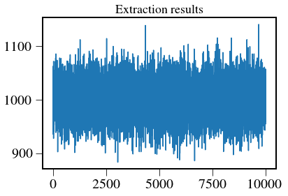
In [76]:
subim[np.newaxis,:].shape
psflets_flat.T.shape
Out[76]:
(150, 10)
In [360]:
pixnoise=0
Niter = np.amax((subim*Nelec+pixnoise)/0.1).astype(int)
print Niter
img = np.zeros_like(subim)
var = np.zeros_like(subim)
for h in range(Niter):
frame = np.random.poisson((subim*Nelec+pixnoise)/Niter.astype(float))
img+= frame
var += frame**2
var /= Niter.astype(float)
var -= (img/Niter.astype(float))**2
var*=Niter
1988
In [363]:
# plt.imshow(np.sum(img,axis=0))
# plt.colorbar(orientation='horizontal')
# plt.figure()
# plt.imshow(Niter*np.std(img,axis=0)**2)
# plt.colorbar(orientation='horizontal')
plt.imshow(img)
plt.colorbar(orientation='horizontal')
plt.figure()
plt.imshow(var)
plt.colorbar(orientation='horizontal')
Out[363]:
<matplotlib.colorbar.Colorbar at 0x1c26faa250>


In [283]:
# subim = psflet_subarr[3]+psflet_subarr[4]+psflet_subarr[5]
# sumpsflets = psflet_subarr[3]+psflet_subarr[4]+psflet_subarr[5]+1e-10
def calcSNR(Nelec,subim,psflet_subarr,pixnoise=0,npix=0,Niter=10000,plot=True):
#sumpsflets = subim*Nelec+pixnoise+1e-10
vals = np.zeros((10,Niter))
for i in range(Niter):
# subtract mean of background (assumed known)
Niter = np.amax((subim*Nelec+pixnoise)/0.1).astype(int)
print Niter
img = np.zeros_like(subim)
var = np.zeros_like(subim)
for h in range(Niter):
frame = np.random.poisson((subim*Nelec+pixnoise)/Niter.astype(float))
img+= frame
var += frame**2
var /= Niter.astype(float)
var -= (img/Niter.astype(float))**2
img -= pixnoise
img = np.random.poisson(subim*Nelec)+np.random.poisson(pixnoise,subim.shape)-pixnoise
# subim_flat = np.reshape(img/np.sqrt(sumpsflets), -1)
# psflets_flat = np.reshape(psflet_subarr, (psflet_subarr.shape[0], -1))
# sumpsflets_flat = np.reshape(sumpsflets,-1)
# vals[:,i] = np.linalg.lstsq(psflets_flat.T/(np.sqrt(sumpsflets_flat[:,np.newaxis])), subim_flat)[0]
x = np.reshape(img,-1)
psflets_flat = np.reshape(psflet_subarr, (psflet_subarr.shape[0], -1))
variance = np.reshape(img+pixnoise+1,-1)
A = psflets_flat.T
Ninv = np.linalg.inv(np.diag(variance))
right = np.dot(np.transpose(A),np.dot(Ninv,x))
Cinv = np.dot(np.transpose(A),np.dot(Ninv,A))
C = np.linalg.inv(Cinv)
f = np.dot(C,right)
Q = sp.linalg.sqrtm(Cinv)
s = np.sum(Q,axis=1)
R = Q/s[np.newaxis,:]
Ctilde_inv = np.diag(s**2)
Ctilde = np.dot(np.dot(R,C),R.T)
vals[:,i] = np.dot(R,f)
estSNR = np.mean(vals,axis=1)/np.std(vals,axis=1)
if plot:
plt.figure()
plt.imshow(img)
plt.colorbar(orientation='horizontal')
plt.figure()
plt.plot(estSNR)
plt.title('SNR')
SNR = Nelec/(np.sqrt(Nelec+npix*pixnoise))
print "Expected SNR:",SNR
print "Estimated SNR:",estSNR[4]
print "Change:",100*(SNR-estSNR[4])/SNR,"%"
plt.figure()
plt.plot(vals[4])
plt.title('Extraction results')
print 'Mean:',np.mean(vals[4])
print 'Std:',np.std(vals[4])
return estSNR,vals
In [156]:
Nelec = 1000
In [284]:
subim = psflet_subarr[4]
calcSNR(Nelec=Nelec,
subim=subim,
psflet_subarr=psflet_subarr,
pixnoise=0,
npix=0,
plot=True)
Expected SNR: 31.6227766017
Estimated SNR: 28.6672219085
Change: 9.3462845795 %
Mean: 658.346664578
Std: 22.965136513
Out[284]:
(array([ -6.69609382, 6.17600137, -3.09012777, 26.77403156,
28.66722191, 20.85799043, -2.59840071, 10.17968289,
-14.52433335, 15.9369054 ]),
array([[ -0.98727645, -1.23838786, -1.5672904 , ..., -1.17845905,
-1.18490278, -1.08900126],
[ 3.03780782, 4.33055175, 5.03513058, ..., 3.77195768,
3.7365447 , 3.46632474],
[ -5.10280313, -11.58715201, -11.81517458, ..., -7.79158495,
-7.40714042, -7.22177143],
...,
[ 4.90337577, 3.59649249, 4.46750672, ..., 4.05217952,
4.20042556, 4.04761129],
[ -2.25780475, -1.72025209, -2.20662132, ..., -2.13536533,
-2.02757096, -1.94594523],
[ 0.87330208, 0.70774927, 0.87771375, ..., 0.83781596,
0.84501627, 0.77734313]]))
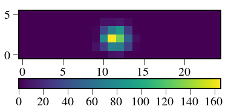


In [98]:
subim = psflet_subarr[3]+psflet_subarr[4]+psflet_subarr[5]
calcSNR(Nelec=Nelec,
subim=subim,
psflet_subarr=psflet_subarr,
pixnoise=0,
npix=0,
plot=True)
Expected SNR: 31.6227766017
Estimated SNR: 30.2364911003
Change: 4.38381967158 %
Mean: 965.720605249
Std: 31.938911233
Out[98]:
array([ 4.41647161e-03, 3.61707089e-01, 2.22621102e+01,
3.20128514e+01, 3.02364911e+01, 3.19807643e+01,
2.30514677e+01, 8.38364765e-01, -1.40290249e-02,
3.04891060e-02])


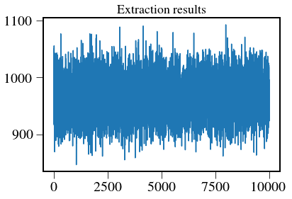
In [292]:
vect = np.array([1,0,1,0,1,0,1,0,1,0])
plt.imshow(np.sum(psflet_subarr*vect[:,np.newaxis,np.newaxis],axis=0))
Out[292]:
<matplotlib.image.AxesImage at 0x1c279b6a10>

In [293]:
subim = np.sum(psflet_subarr,axis=0)
subim = np.sum(psflet_subarr*vect[:,np.newaxis,np.newaxis],axis=0)
est,vals = calcSNR(Nelec=1000,
subim=subim,
psflet_subarr=psflet_subarr,
pixnoise=0,
npix=0,
plot=True)
Expected SNR: 31.6227766017
Estimated SNR: 26.6210210663
Change: 15.8169397912 %
Mean: 617.077255466
Std: 23.1800746459
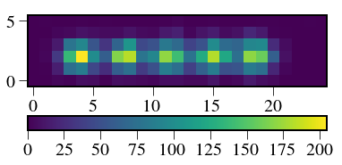


In [207]:
plt.plot(vals[:,500:510])
Out[207]:
[<matplotlib.lines.Line2D at 0x10e693bd0>,
<matplotlib.lines.Line2D at 0x10e693c90>,
<matplotlib.lines.Line2D at 0x10e693d50>,
<matplotlib.lines.Line2D at 0x10e693e10>,
<matplotlib.lines.Line2D at 0x10e693ed0>,
<matplotlib.lines.Line2D at 0x10e693f90>,
<matplotlib.lines.Line2D at 0x10e6a0090>,
<matplotlib.lines.Line2D at 0x10e6a0150>,
<matplotlib.lines.Line2D at 0x10e6a0210>,
<matplotlib.lines.Line2D at 0x10e6a02d0>]

In [172]:
subim = psflet_subarr[4]
calcSNR(Nelec=Nelec,
subim=subim,
psflet_subarr=psflet_subarr,
pixnoise=1000,
npix=10,
plot=True)
Expected SNR: 9.53462589246
Estimated SNR: 6.88169078276
Change: 27.8242181667 %
Mean: 1000.24890453
Std: 145.349295124
Out[172]:
array([ -1.16564273e-02, 9.98796925e-03, -1.34675929e-02,
-1.03571127e-02, 6.88169078e+00, 1.23015588e-02,
3.05834008e-03, -8.97785608e-03, 1.35429766e-02,
-1.03598799e-02])

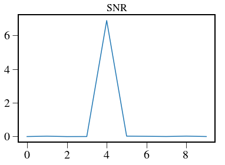
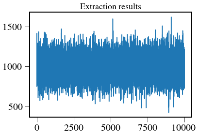
This is the main function that suggests that an npix of ~6 is appropriate for the regime we are in (<1000 electrons)
In [208]:
noiselist = np.arange(0,1000,100) # mean number of electrons from background
estvals = []
compvals = []
npix = 6
Nelec=2000
for val in noiselist:
# subim = psflet_subarr[4]
subim = np.sum(psflet_subarr,axis=0)
estSNR = calcSNR(Nelec=Nelec,
subim=subim,
psflet_subarr=psflet_subarr,
pixnoise=val,
npix=npix,
plot=False)
estvals.append(estSNR[4])
compvals.append(Nelec/(np.sqrt(Nelec+npix*val)))
plt.plot(noiselist,estvals)
plt.plot(noiselist,np.array(compvals)*0.54)
Out[208]:
[<matplotlib.lines.Line2D at 0x10e301950>]

Here we try to calculate the overlap fraction of two neighboring PSFs¶
In [188]:
np.sum(psflet_subarr[4]*psflet_subarr[5]+psflet_subarr[4]*psflet_subarr[3])
Out[188]:
0.081430537510390921
In [191]:
plt.figure()
plt.imshow(psflet_subarr[4])
plt.figure()
plt.imshow(psflet_subarr[3])
Out[191]:
<matplotlib.image.AxesImage at 0x10deb90d0>
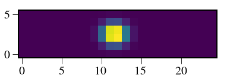
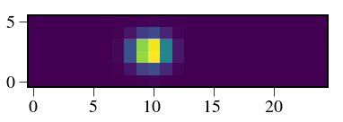
In [204]:
print np.sum(np.minimum(psflet_subarr[4],psflet_subarr[3])+np.minimum(psflet_subarr[4],psflet_subarr[6]))
val=0
img=np.zeros_like(subim)
for i in range(10):
if i!=4:
img += np.minimum(psflet_subarr[4],psflet_subarr[i])
val+=np.sum(np.minimum(psflet_subarr[4],psflet_subarr[i]))
print val
plt.imshow(img)
plt.colorbar()
0.402294711401
0.810877565754
Out[204]:
<matplotlib.colorbar.Colorbar at 0x10e97abd0>
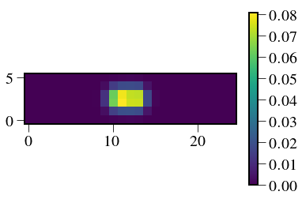
In [2]:
from crispy.unitTests import testOptExt
im = Image(filename = par.wavecalDir + 'polychromeR%dstack.fits' % (par.R))
spec,var = testOptExt(par,im,54,54,smoothandmask=False)
crispy - INFO - Read data from HDU 0 of ..//ReferenceFiles/wavecalR50_660/polychromeR50stack.fits
crispy - INFO - Reduced cube will have 19 wavelength bins
crispy - WARNING - No PSFLet widths found - assuming critical samping at central wavelength
In [5]:
plt.plot(spec)
Out[5]:
[<matplotlib.lines.Line2D at 0x1c0a9bb310>]
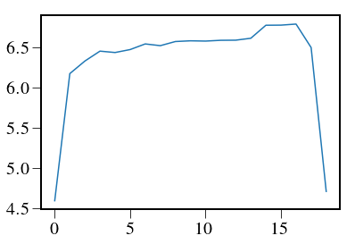
In [116]:
from crispy.tools.locate_psflets import PSFLets
PSFlet_tool = PSFLets(load=True, infiledir=par.wavecalDir)
i=54
j=54
xindx = PSFlet_tool.xindx
yindx = PSFlet_tool.yindx
Nmax = PSFlet_tool.nlam_max
_x = xindx[i, j, :PSFlet_tool.nlam[i, j]]
_y = yindx[i, j, :PSFlet_tool.nlam[i, j]]
_lam = PSFlet_tool.lam_indx[i, j, :PSFlet_tool.nlam[i, j]]
X = _x-y0
X = X[1:-1]
Y = _y-x0
Y = Y[1:-1]
lam = _lam[1:-1]
print X,Y,_lam
[ 0. 1. 2. 3. 4. 5. 6. 7. 8. 9. 10. 11. 12. 13. 14.
15. 16. 17. 18. 19. 20. 21. 22. 23. 24. 25.] [ 2.48430467 2.4846161 2.48488505 2.48511378 2.48530457 2.48545978
2.48558134 2.48567283 2.4857371 2.48577668 2.48579567 2.48579714
2.48578521 2.48576374 2.48573718 2.48571006 2.48568725 2.48567393
2.48567578 2.48569841 2.485748 2.48583112 2.48595499 2.48612681
2.48635425 2.48664551] [ 576.74744611 582.56776822 588.44268775 594.37264881 600.35835049
606.40062819 612.50047722 618.66004432 624.87883289 631.15786097
637.49968826 643.90332588 650.37139018 656.90367092 663.50229484
670.16694683 676.90053916 683.70230327 690.57396904 697.51721008
704.53206937 711.61970547 718.78123942 726.01815774 733.33105824
740.72074028 748.18813204 755.7341012 ]
In [117]:
subim = np.sum(psflet_subarr,axis=0)
subim*=1000
spec = np.zeros(subim.shape[1])
subim_res = subim.copy()
sig = 2./2.35*lam/par.FWHMlam
y = np.mean(Y)
for i in range(subim.shape[1]):
weights = np.exp(-(np.arange(subim.shape[0])-y)**2/2./sig[i]**2)/sig[i]/np.sqrt(2.*np.pi)
spec[i] = np.sum(subim[:,i]*weights)/np.sum(weights**2)
subim_res[:,i] -= spec[i]*weights
print spec[i]
0.0446018525614
3.27742529873
57.1886856588
267.776676199
464.059651946
503.382148237
517.63097062
520.938413141
524.682808036
534.528985074
535.782353331
542.845373307
547.14135606
550.165539601
554.385271925
557.797197134
563.948038094
580.779276101
582.289961553
586.381659471
538.023559796
337.269050645
108.522932829
14.2039514417
0.670589282647
In [120]:
plt.imshow(subim)
plt.colorbar(orientation='horizontal')
Out[120]:
<matplotlib.colorbar.Colorbar at 0x1c1739d710>

In [119]:
plt.figure(figsize=(10,5))
plt.imshow(subim_res)
plt.colorbar(orientation='horizontal')
Out[119]:
<matplotlib.colorbar.Colorbar at 0x1c1707ac90>

In [200]:
from crispy.tools.locate_psflets import PSFLets
def calcSNROptExt(Nelec,subim,pixnoise=0,npix=0,Niter=10000,plot=True):
PSFlet_tool = PSFLets(load=True, infiledir=par.wavecalDir)
xindx = PSFlet_tool.xindx
yindx = PSFlet_tool.yindx
Nmax = PSFlet_tool.nlam_max
i=lensX+54
j=lensY+54
_x = xindx[i, j, :PSFlet_tool.nlam[i, j]]
_y = yindx[i, j, :PSFlet_tool.nlam[i, j]]
_lam = PSFlet_tool.lam_indx[i, j, :PSFlet_tool.nlam[i, j]]
X = _x-y0
X = X[1:-1]
Y = _y-x0
Y = Y[1:-1]
lam = _lam[1:-1]
vals = np.zeros((subim.shape[1],Niter))
for j in range(Niter):
# subtract mean of background (assumed known)
img = np.random.poisson(subim*Nelec)+np.random.poisson(pixnoise,subim.shape)-pixnoise
spec = np.zeros(subim.shape[1])
sig = 2./2.35*lam/par.FWHMlam
y = np.mean(Y)
for i in range(img.shape[1]):
weights = np.exp(-(np.arange(img.shape[0])-y)**2/2./sig[i]**2)/sig[i]/np.sqrt(2.*np.pi)
vals[i,j] = np.sum(img[:,i]*weights)/np.sum(weights**2)
estSNR = np.mean(vals,axis=1)/np.std(vals,axis=1)
estSNR_central = np.mean(0.5*(vals[13,:]+vals[14,:]))/np.std(0.5*(vals[13,:]+vals[14,:]))
if plot:
plt.figure()
plt.imshow(img)
plt.colorbar(orientation='horizontal')
plt.figure()
plt.plot(estSNR)
plt.title('SNR')
SNR = Nelec/(np.sqrt(Nelec+npix*pixnoise))
print "Expected SNR:",SNR
print "Estimated SNR:",estSNR_central
print "Change:",100*(SNR-estSNR_central)/SNR,"%"
plt.figure()
plt.plot(vals[4])
plt.title('Extraction results')
print 'Mean:',np.mean(0.5*(vals[13,:]+vals[14,:]))
print 'Std:',np.std(0.5*(vals[13,:]+vals[14,:]))
return estSNR_central
In [198]:
subim = np.sum(psflet_subarr,axis=0)
calcSNROptExt(Nelec=1000,
subim=subim,
pixnoise=0,
npix=6,
plot=True)
Expected SNR: 31.6227766017
Estimated SNR: 31.2107892037
Change: 1.30281854503 %
Mean: 549.900953784
Std: 17.6189378037
Out[198]:
array([ 0.27040382, 2.14276031, 8.13595503, 16.05282627,
19.98479726, 20.46354341, 20.64617222, 20.76131422,
21.20873272, 21.03647236, 21.63223922, 21.15233367,
21.38052993, 21.92690443, 21.83935768, 22.18571597,
21.91702882, 22.32115096, 22.01193149, 22.58144857,
20.97975538, 16.01598351, 8.53553894, 2.89301963, 0.58626053])


In [207]:
noiselist = np.arange(0,1000,100) # mean number of electrons from background
estvals = []
compvals = []
npix = 5
Nelec=300
for val in noiselist:
# subim = psflet_subarr[4]
subim = np.sum(psflet_subarr,axis=0)
estSNR = calcSNROptExt(Nelec=Nelec,
subim=subim,
pixnoise=val,
npix=npix,
plot=False)
estvals.append(estSNR)
compvals.append(Nelec/(np.sqrt(Nelec+npix*val)))
plt.figure(figsize=(10,8))
plt.title('Optimal extraction')
plt.plot(noiselist,estvals,label="Simulated")
plt.xlabel('Number of additive noise electrons per pixel')
plt.ylabel('SNR')
plt.plot(noiselist,np.array(compvals),label='Expected with npix=%d' % npix)
plt.legend()
Out[207]:
[<matplotlib.lines.Line2D at 0x1c1771bad0>]

In [208]:
plt.figure(figsize=(10,8))
plt.title('Optimal extraction')
plt.plot(noiselist,estvals,label="Simulated")
plt.xlabel('Number of additive noise electrons per pixel')
plt.ylabel('SNR')
plt.plot(noiselist,np.array(compvals),label='Expected with npix=%d' % npix)
plt.legend()
Out[208]:
<matplotlib.legend.Legend at 0x1c16e93190>
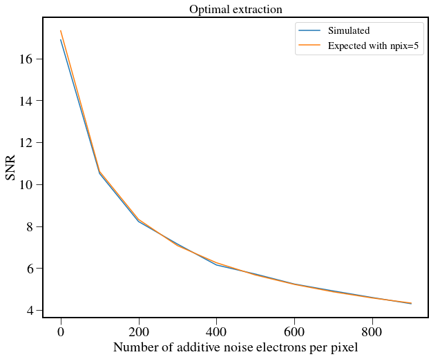
Test with Richardson-Lucy deconvolution¶
In [177]:
# subim = psflet_subarr[3]+psflet_subarr[4]+psflet_subarr[5]
# sumpsflets = psflet_subarr[3]+psflet_subarr[4]+psflet_subarr[5]+1e-10
from crispy.tools.reduction import RL
def calcSNR_RL(Nelec,subim,psflet_subarr,pixnoise=0,npix=0,Niter=10000,plot=True):
sumpsflets = subim*Nelec+pixnoise+1e-10
vals = np.zeros((10,Niter))
for i in range(Niter):
# subtract mean of background (assumed known)
img = np.random.poisson(subim*Nelec)+np.random.poisson(pixnoise,subim.shape)-pixnoise
# subim_flat = np.reshape(img/np.sqrt(sumpsflets), -1)
# psflets_flat = np.reshape(psflet_subarr, (psflet_subarr.shape[0], -1))
# sumpsflets_flat = np.reshape(sumpsflets,-1)
# vals[:,i] = np.linalg.lstsq(psflets_flat.T/(np.sqrt(sumpsflets_flat[:,np.newaxis])), subim_flat)[0]
vals[:,i] = RL(img,psflets=psflet_subarr)[0]
estSNR = np.mean(vals,axis=1)/np.std(vals,axis=1)
if plot:
plt.figure()
plt.imshow(img)
plt.colorbar(orientation='horizontal')
plt.figure()
plt.plot(estSNR)
plt.title('SNR')
SNR = Nelec/(np.sqrt(Nelec+npix*pixnoise))
print "Expected SNR:",SNR
print "Estimated SNR:",estSNR[4]
print "Change:",100*(SNR-estSNR[4])/SNR,"%"
plt.figure()
plt.plot(vals[4])
plt.title('Extraction results')
print 'Mean:',np.mean(vals[4])
print 'Std:',np.std(vals[4])
return estSNR
In [178]:
subim = np.sum(psflet_subarr,axis=0)
calcSNR_RL(Nelec=1000,
subim=subim,
psflet_subarr=psflet_subarr,
pixnoise=0,
npix=10,
plot=True)
Expected SNR: 31.6227766017
Estimated SNR: 16.3542561444
Change: 48.2833011459 %
Mean: 1000.03944128
Std: 61.1485739525
Out[178]:
array([ 25.29353844, 19.03189105, 17.99034366, 17.26681037,
16.35425614, 15.38258849, 14.89139398, 14.27061078,
14.59881942, 21.86956021])


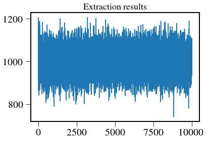
In [371]:
from crispy.tools.reduction import RL
from crispy.tools.reduction import calculateWaveList
par.nchanperspec_lstsq = 1.
def calcSNRtotal(Nelec,subim,psflet_subarr,pixnoise=0.,npix=0,Niter=10000,plot=True):
#sumpsflets = subim*Nelec+pixnoise+1e-10
lstsq = np.zeros((10,Niter))
RLvals = np.zeros((10,Niter))
optext = np.zeros((subim.shape[1],Niter))
PSFlet_tool = PSFLets(load=True, infiledir=par.wavecalDir)
xindx = PSFlet_tool.xindx
yindx = PSFlet_tool.yindx
Nmax = PSFlet_tool.nlam_max
i=lensX+54
j=lensY+54
_x = xindx[i, j, :PSFlet_tool.nlam[i, j]]
_y = yindx[i, j, :PSFlet_tool.nlam[i, j]]
_lam = PSFlet_tool.lam_indx[i, j, :PSFlet_tool.nlam[i, j]]
X = _x-y0
X = X[1:-1]
Y = _y-x0
Y = Y[1:-1]
lam = _lam[1:-1]
psflets_flat = np.reshape(psflet_subarr, (psflet_subarr.shape[0], -1))
A = psflets_flat.T
# variance = np.reshape(subim*Nelec+pixnoise+1e-10,-1)
# Ninv = np.linalg.inv(np.diag(variance))
# Cinv = np.dot(np.transpose(A),np.dot(Ninv,A))
# C = np.linalg.inv(Cinv)
# Q = sp.linalg.sqrtm(Cinv)
# s = np.sum(Q,axis=1)
# R = Q/s[np.newaxis,:]
# Ctilde_inv = np.diag(s**2)
# Ctilde = np.dot(np.dot(R,C),R.T)
for j in range(Niter):
# subtract mean of background (assumed known)
# img = np.random.poisson(subim*Nelec)+np.random.poisson(pixnoise,subim.shape)-pixnoise
Niter = np.amax((subim*Nelec+pixnoise)/0.1).astype(int)
img = np.zeros_like(subim)
var = np.zeros_like(subim)
for h in range(Niter):
frame = np.random.poisson((subim*Nelec+pixnoise)/Niter.astype(float))
img+= frame
var += frame**2
var /= Niter.astype(float)
var -= (img/Niter.astype(float))**2
var*=Niter
img -= pixnoise
# subim_flat = np.reshape(img/np.sqrt(sumpsflets), -1)
# psflets_flat = np.reshape(psflet_subarr, (psflet_subarr.shape[0], -1))
# sumpsflets_flat = np.reshape(sumpsflets,-1)
# vals[:,i] = np.linalg.lstsq(psflets_flat.T/(np.sqrt(sumpsflets_flat[:,np.newaxis])), subim_flat)[0]
# variance = np.reshape(img+pixnoise+1,-1)
variance = np.reshape(subim*Nelec+pixnoise+1e-10,-1)
# variance = np.reshape(var+1,-1)
Ninv = np.linalg.inv(np.diag(variance))
Cinv = np.dot(np.transpose(A),np.dot(Ninv,A))
C = np.linalg.inv(Cinv)
Q = sp.linalg.sqrtm(Cinv)
s = np.sum(Q,axis=1)
R = Q/s[np.newaxis,:]
Ctilde_inv = np.diag(s**2)
x = np.reshape(img,-1)
right = np.dot(np.transpose(A),np.dot(Ninv,x))
f = np.dot(C,right)
lstsq[:,j] = np.dot(R,f)
RLvals[:,j] = np.dot(R,RL(img,psflets=psflet_subarr)[0])
spec = np.zeros(subim.shape[1])
sig = 2./2.35*lam/par.FWHMlam
y = np.mean(Y)
for i in range(img.shape[1]):
weights = np.exp(-(np.arange(img.shape[0])-y)**2/2./sig[i]**2)/sig[i]/np.sqrt(2.*np.pi)
optext[i,j] = np.sum(img[:,i]*weights)/np.sum(weights**2)
estSNRlstsq = np.mean(lstsq,axis=1)/np.std(lstsq,axis=1)
estSNRRL = np.mean(RLvals,axis=1)/np.std(RLvals,axis=1)
estSNROptExt = np.mean(0.5*(optext[13,:]+optext[14,:]))/np.std(0.5*(optext[13,:]+optext[14,:]))
if plot:
plt.figure()
plt.imshow(img)
plt.colorbar(orientation='horizontal')
plt.figure()
plt.imshow(img-np.reshape(np.dot(A,np.dot(R,f)),subim.shape))
plt.colorbar(orientation='horizontal')
plt.figure()
lamlist,_ = calculateWaveList(par,method='lstsq')
lamlist,_ = calculateWaveList(par,method='lstsq')
plt.plot(lamlist,lstsq[:,-1])
plt.plot(lamlist,RLvals[:,-1])
lamlist,_ = calculateWaveList(par,method='optext')
scale = np.mean(RLvals[:,-1])/np.mean(optext[4:-4,-1])
plt.plot(lamlist,scale*optext[3:-3,-1])
print np.mean(RLvals[:,-1]),np.mean(optext[4:-4,-1])
# plt.figure()
# plt.plot(estSNRlstsq)
# plt.plot(estSNRRL)
# plt.plot(estSNROptExt)
# plt.title('SNR')
SNR = Nelec/(np.sqrt(Nelec+npix*pixnoise))
print "Expected SNR:",SNR
print "Estimated SNR lstsq:",estSNRlstsq[4]
print "Estimated SNR RL:",estSNRRL[4]
print "Estimated SNR OptExt:",estSNROptExt
print "Expected mean:",Nelec
print "Estimated mean:",np.mean(lstsq,axis=1)[4]
print "Estimated mean:",np.mean(RLvals,axis=1)[4]
print "Estimated mean:",np.mean(0.5*(optext[13,:]+optext[14,:]))
# plt.figure()
# plt.plot(vals[4])
# plt.title('Extraction results')
# print 'Mean:',np.mean(vals[4])
# print 'Std:',np.std(vals[4])
return estSNRlstsq,estSNRRL,estSNROptExt
In [372]:
subim = np.sum(psflet_subarr,axis=0)
subim = np.sum(psflet_subarr*vect[:,np.newaxis,np.newaxis],axis=0)
calcSNRtotal(Nelec=1000,
subim=subim,
psflet_subarr=psflet_subarr,
pixnoise=0.1,
npix=5,
plot=True,
Niter=100)
crispy - INFO - Reduced cube will have 10 wavelength bins
crispy - INFO - Reduced cube will have 10 wavelength bins
crispy - INFO - Reduced cube will have 19 wavelength bins
504.200000002 270.427961443
Expected SNR: 31.6148738709
Estimated SNR lstsq: 28.7241519754
Estimated SNR RL: 27.0171184082
Estimated SNR OptExt: 17.3440744592
Expected mean: 1000
Estimated mean: 623.439946174
Estimated mean: 623.38923182
Estimated mean: 210.494672769
Out[372]:
(array([ 28.2121054 , 18.19983961, 25.12328164, 20.55660973,
28.72415198, 19.37088763, 30.26151529, 18.73784101,
27.18905131, 17.41781101]),
array([ 25.27122904, 17.19441798, 25.04029604, 18.77668908,
27.01711841, 17.30833943, 27.58681473, 17.24006159,
21.99300259, 8.50430892]),
17.344074459247068)


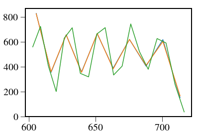